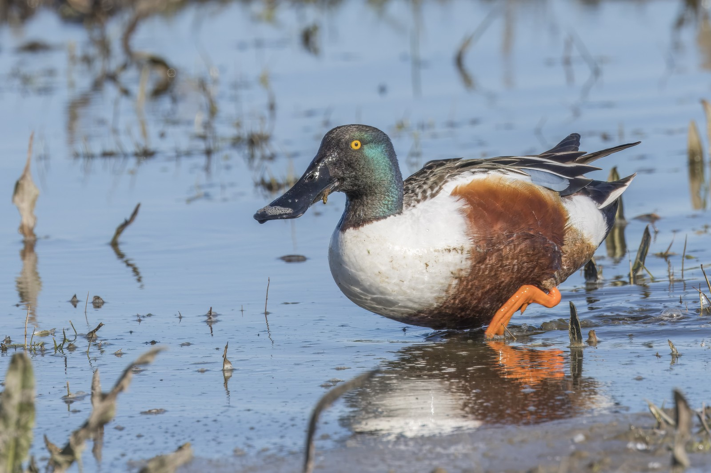

Parmi les canards rassemblés au bord des étangs en automne, le Canard souchet se reconnaît souvent avant que ses couleurs ne se précisent : son long bec s’élargit en spatule. Il ne se contente pas de fouiller la vase, mais filtre de minuscules aliments dans l’eau. Son retour saisonnier permet de comprendre la valeur des zones humides peu profondes, au-delà d’un nom ajouté à une liste d’observations.
Fiche d’identité
- Arabe : أبو مجرف, également مجرفي المنقار
- Anglais : Northern Shoveler
- Français : Canard souchet
- Nom scientifique : Spatula clypeata ; les anciennes sources utilisent Anas clypeata
- Ordre et famille : Anseriformes ; Anatidae
- Longueur : environ 44–51 cm ; envergure : environ 69–84 cm
- Habitat : étangs, marais et lacs peu profonds, d’eau douce ou saumâtre
- Présence dans le monde arabe : surtout migrateur de passage et hivernant, avec de rares nidifications locales
- Statut mondial : Préoccupation mineure (LC) ; nom scientifique et taxonomie selon AviList v2026 [1]
Pourquoi l’observer cette saison ?
Les zones humides arabes prennent de l’importance lorsque les canards quittent leurs régions de reproduction septentrionales pour leurs quartiers d’hiver. En Arabie saoudite, l’hivernage s’étend d’octobre à mars. Sur la voie occidentale, les données danoises de baguage documentent l’arrivée de certains oiseaux au Maroc en octobre. Ce sont deux exemples de routes différentes, non une date d’arrivée valable pour tous les pays arabes. [6] [12]
Des situations différentes dans le monde arabe
En Tunisie, une étude de l’hiver 2020–2021, publiée en 2024, confirme sa présence. En Algérie, des chercheurs ont publié une observation de juin 2019 à Sebkhet El-Mahmel : un couple accompagné de huit jeunes. Le terme « hivernant » décrit donc la situation dominante sans exclure toute nidification locale ; cette observation ne démontre pas davantage une sédentarité généralisée. [9] [10]
En Égypte, des évaluations historiques du lac Nasser le citent parmi les canards hivernants. Elles attestent le rôle du site, mais ne constituent pas un dénombrement actuel. En Palestine, la liste de la Wildlife Society le décrit comme très commun en hiver et au passage. Une présence dans une liste nationale ne signifie ni une abondance égale dans chaque étang, ni une reproduction dans le pays. [11] [8]
Une reproduction rare a été signalée à Qatif, en Arabie saoudite. Aux Émirats arabes unis : localement commun à très commun au passage et en hiver, occasionnel en été. Un individu restant en été ne prouve pas, à lui seul, une nidification. [6] [7]
Le bec d’abord, puis le plumage
Le mâle en plumage vif présente une tête vert foncé, une poitrine blanche et des flancs châtains. L’aile montre une plage bleu pâle et un miroir vert. Ces couleurs sont utiles, mais l’extrémité élargie du bec reste le meilleur indice lorsque la lumière masque les reflets de la tête. [2]
La femelle et le jeune sont bruns et tachetés ; un mâle en mue peut leur ressembler davantage. Des marques brunes ne suffisent pas à identifier une femelle. Pour le distinguer d’une femelle de Canard colvert, examinez ensemble le bec nettement élargi, la tête et l’aile. Une couleur ou une photographie lointaine ne permet pas toujours de déterminer sûrement le sexe et l’âge. [3]
De petites proies, un comportement remarquable
De fines lamelles bordent le bec et filtrent les invertébrés aquatiques et les graines. Les oiseaux nagent parfois en rond ou déplacent le bec latéralement en s’alimentant. Cette spécialisation explique leur association avec les eaux peu profondes riches en nourriture. Leur présence dans un bassin de traitement ou une eau trouble ne démontre pas que cette eau est propre ou utilisable sans risque par l’être humain. [4]
Du nid à la migration suivante
La reproduction se déroule principalement dans les régions tempérées septentrionales d’Eurasie et d’Amérique du Nord. La femelle construit au sol un nid caché dans la végétation, le garnit de duvet, couve et accompagne les jeunes. Les données du BTO indiquent une ponte habituelle de 9–11 œufs, environ 22–23 jours d’incubation et un envol vers 40–45 jours. Ces durées biologiques sont approximatives, non un calendrier identique pour chaque population. [5]
Les canetons naissent couverts de duvet et nagent rapidement, mais ont encore besoin d’abri et de soins. Après la reproduction, le plumage se renouvelle ; les mâles perdent temporairement la capacité de voler pendant le remplacement des rémiges. Les oiseaux se regroupent ensuite et gagnent leurs quartiers d’hiver. Une observation estivale doit donc être distinguée d’une preuve de nid ou de nichée. [4]
Son intérêt et une observation responsable
Le souchet illustre la diversité des modes d’alimentation d’une zone humide, reliant de petits organismes aquatiques au réseau alimentaire des oiseaux. Sa conservation suppose des lieux de nourrissage et de repos reliés entre eux, plutôt que la protection d’une belle image détachée de son habitat. Le classement mondial en Préoccupation mineure ne garantit pas la sécurité de chaque rassemblement local et ne rend pas anodin l’assèchement d’un petit étang. [13]
Observez aux jumelles depuis un emplacement fixe, sans faire décoller le groupe pour une photographie. Notez la date, le lieu, l’effectif et le comportement : ces renseignements aident à distinguer passage et fréquentation répétée. Le statut cynégétique dépend des règles applicables au pays, au site et à la saison ; il ne découle ni du classement de conservation, ni de l’appellation « canard sauvage ».
Références
- AviList v2026 — Global Avian Checklist
- Cornell Lab — Northern Shoveler identification
- RSPB — Shoveler identification
- Cornell Lab — Northern Shoveler life history
- BTO BirdFacts — Shoveler biology
- The Birds of Saudi Arabia, vol. 2, pp. 20–24
- Emirates Bird Records Committee — checklist, 19 February 2026, pp. 10–11
- Palestine Wildlife Society — bird checklist
- Hamza et al. (2024) — wintering waterbirds in Tunisian wetlands
- Slimane, Ali & Telailia (2023) — Northern Shoveler breeding record in Algeria
- World Database of Key Biodiversity Areas — Lake Nasser, historical assessment (2001)
- Natural History Museum of Denmark — Northern Shoveler migration atlas
- AEWA — Spatula clypeata
Photo : © Charles J. Sharp, via Wikimedia Commons, CC BY-SA 4.0. Prise de vue aux Pays-Bas le 2026-04-07 ; image redimensionnée et compressée pour le site, sans modification de son contenu.
_male_Marken.jpg){kind=link}